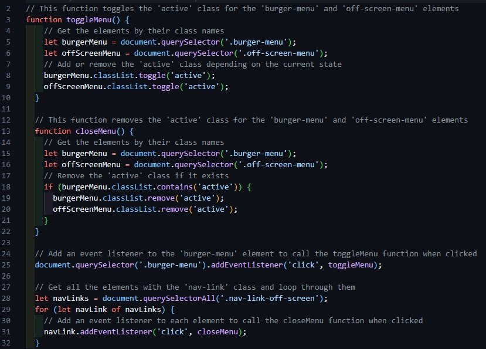

Burger Menu JavaScript Function
Below is a screenshot of a JavaScript function I used on my portfolio website for the burger menu button and side menu. The function is designed to add the class 'active' when clicked, which transforms the menu button and displays the side menu. When the button is clicked again, it will close the menu and return to its former state, however, clicking the links didn't always work as intended. This is because the original function was designed to remove the 'active' class when the button was clicked and not the link, so a separate function was created to ensure the menu closed when the button or a link was clicked.
